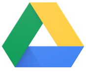
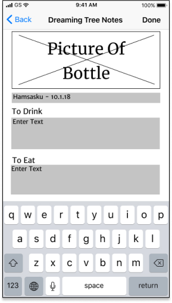
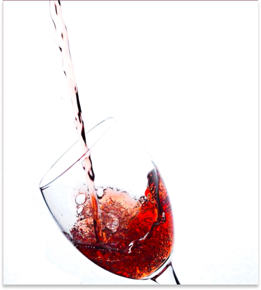
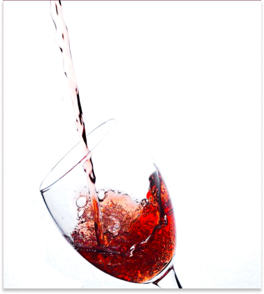

Project Overview
- Parameters
- Mobile/Desktop Accessible
- Create/Store/Save/Organize Content
- Collaborate with network
- Deliverables
- Competitive Analysis
- Market Research & Surveys
- User Personas/Stories
- User Flows/Interfaces
- Wireframes
- Prototype Testing
- Branding and Strategy
- Tools Used
- Axure
- Draw IO
- Figma
- Google Suite
- Invision
- Usability Hub
Market Research
what apps do people use?
Free with social aspect baked in and direct buy abilities from site
Broad targeting and could be outflanked micro targeting or direct link from companies
Google Drive
User friendly with free storage, but more suited for personal use than similar products
Data security with them has become worrysome
Wunderlist
User friendly with both personal and professional options, and simple collaboration
Microsoft might discontinue, file uploading isn’t a strongsuit
conclusions
What worked best, and the common theme for these products is simplicity. Less clicks equals more user engagement. Clear and defined user interaction also caused for a smoother user experience.
Surveys
Used surveys to find out what products people used, how they used them, and how their experience might be improved. Additional questions showed a need in the market, for a potential wine tasting application with a secure network social component
- Products Used
- 77% Dropbox/Box/Drive
- 34% Evernote
- 27% Pinterest
- 7% Wunderlist
- Digital Or On Hand
- 89% Surveyed want to store information either digitally, or digitally combined with on hand
- Data Security
- 80% Are worried about data security
is there a market for a storage based product for wine drinkers?
53% showed interest in a wine storage/sharing product
would people use it for more than wine?
70% would potentially use this for more than just wine
what are the main things users would want from the product
- 77% Save tasting notes
- 71% Sort and suggestions
- 53% Purchase history
conclusions
Based on those surveyed, there would be a desire for an app to share wine content, as well as additional alcoholic beverages. The main goals would be create notes, and both get and receive suggestions from a secure network.
User Personas
potential target users?

Javier - Power User
Always on the go, needs access to lots of information.
Constantly networking and network trust is paramount to him.

Alexa - Casual User
Open to trying new products, but isn't particular about what she drinks.
Data security is important to her.

Aaron - Potential User
Doesn't need technology, but needs quick acess to information, thus preferring it on hand.
Not driven by digital conveniences
Content Strategy
how did we decide what was important and where to put it?

Constructed site map outlining all relevent sections, icons, and functions
Developed site outline of key goals, importance of actions, and how the information would flow from sign in to dashboard to note creation.
Created user story list based on research, and user persona information. Created a database of potential desired actions for new as well as existing users, broken down by High / Medium / Low importance processes
User Flows
visualization of the design process
After exploring potential hand sketch options, moved to more defined digital iterations with DrawIO/Axure. Below is signing in/up, with the goal of showing how a user might navigate through parts of the site.
signing in/up
We followed what worked for users in the marketplace to simplify the experience of signing into an account, or creating an account

Lo-Fidelity Wireframes
Used Figma to iterate multiple versions of high need screens, testing versions along the way in the process to understand if the process made sense to users.
Each step of the way the process was refined to a more polished black and white version, testing each process before eventually moving onto the high fidelity versions with colors and clickable prototypes, resembling the final product. The two versions here listed are dashboard/adding notes, and data security.
Mobile Dashboard Iterations


Concept was to be simple and uncluttered
Privacy/Data Security Pages
Data security was a concern from the initial surveys, so an effort was made to create processes that would set the users mind at ease.
Testing Results
Initial idea was not to have each section on the dashboard, then add content within each section. Users asked about a clear “add note” button on the dashboard, so that was addressed.
First Iteration
Second Iteration
Initially the screen where you add information for a new note included a picture of the bottle. That cluttered the view for users, and removed to add space more relevant note information
First Iteration
Second Iteration

Based on the importance of privacy, we always knew we wanted to address security. Users again wanted something simple and obvious, letting you know how your data was controlled.
Branding
what were our thoughts about the product?
Researched potential names and logos, starting with mind maps thinking about different types of alcohol. When and where are they drank the most? How might each make you feel? For instance - Beer might be more casual at a sporting event, vs Champagne at more proper at a black tie wedding.

how did we land on the name & logo?
The idea was to create a logo, organically and connected to the name of the product. Multiple versions of logos as well and names, were iterated starting with hand drawn sketches. before moving to polished digital versions.
Taster stuck and the market expanded past wine connoisseurs, and the logo functioned as the “T” in the name.
what was the process for fonts?
The ideal pairing was a fancy branding font, with a serif/sans-serif for body copy. Here are some of the 20 pairing attempts which didn't make the cut, and later in the process.

Pacifico became the brand font reminiscent of Instagram. Coustard / Arimo / Bookman Old Style / Lato were all attempted as pairings with Pacifico.
Arimo's readability didn't scale as well and was replaced with Lato. It's versatility, also allowed us to also replace Bookman Old Style on buttons for simplicity
Below is the final output after continual refining and user testing. Pacifico was removed from menu use as some users thought it was harder to read than it needed to be


what was the process for colors?
Created color scheme based on grape colors given grapes are the starting point for wine. Tested multiple versions with users before landing on the final version

Multiple color versions were tested to user preferences, eventually landing darker primary grape colors for the primary usage. Users really responded to the boldness of the purple, and connection with both wine tasting.
High Fidelity Wireframes
what was the progressions and why?
High fidelity mock-ups combined the branding and Lo-Fi wireframes. Clickable prototypes were tested via Invision, and A/B preference testing through Usability Hub. Testing ranged from button preference, to creating a new note and switching between sections.
Final Dashboard Pages


Sign Up Process


Misc Information Pages


Two versions of a landing page were attempted - the lighter came into play when visibility became an issue. 75% of those tested preferred the darker option, which ended up a strong choice once I was finally able to make the font visibility work as needed.
 

For the logo, the desire was to have the corkscrew as part of the “T” in the logo. A/B testing was done with users, 83% confirming my design decision to use the logo as part of the name.
Users requested an obvious button to create a new account, and single sign in link on the top. Current users see how to sign in right away, and new users are led down to the create account button.


The dashboard organization changed when users preferred adding content from up top, vs the location in the lo-fi versions. Testing progressed it from “plus sign” with a label, to border options, eventually a centered button.


The organization progressed from only folders on the dash, to all available content in some form. Users preferred a slider moving between each section, to having all content broken down into sections on one visible page.
Conclusions
what did we learn?
Testing is invaluable, and needs to be done early and often. There were times which I tried to overdesign screens and users were able to break me out of a sense of tunnel vision. For instance, as an accent I initially had three of my supplementary colors lining the bottom of each screen, but during some of the clickable prototype testing, I was alerted that it didn’t register with them to be related to wine colors, so they were removed.
Two things I suspected as a fellow consumer that were reinforced upon talking to users - people value their privacy, and want simplicity from their interfaces.
It also allowed me to simplify my typography, as users were gravitating towards multiple fonts, leading me to strip back what I was using for a more organized and refined version. It also reinforced the idea of the cursive font working well for the brand, as well as creating a color style based off grape colors, as those were always well documented thumbs up for the users.
This journey allowed me realize what the story was along the way, that this would be an application driven by community. People want processes democratized, and to share their life with people they know and trust, as an evolution of the global digital open world we’re moving further and further into.
if I had more time...
I would further explore the idea of a design that is app based, vs responsive web. The metrics are shifting, and it would be interesting to know which makes more sense as a baseline product to create.
I might try to further refine the organization for content, to see if things could be even more simplified.
While I am happy with the typography chosen, there are countless options that with more time, there could be additional exploration of what might work, particularly in finding a more elegant/refined button on the landing page.